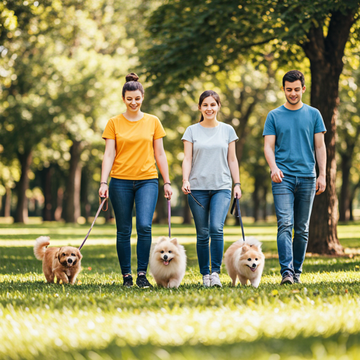

Nuestra Misión
Salvando vidas, una pata a la vez
En 'Save Them', creemos que la compasión no tiene fronteras. Fundado en 2010, nuestro refugio ha sido un santuario para gatos, perro y animales exóticos que han sido abandonados, descuidados o perdidos. Nuestra misión va más allá de solo proporcionar refugio; nos esforzamos por rehabilitar el espíritu de cada animal que cruza nuestras puertas.
Trabajamos incansablemente con un equipo dedicado de veterinarios y voluntarios para asegurar que cada mascota reciba atención médica, el entrenamiento de comportamiento y el amor que necesitan para estar listos para sus hogares definitivos.
Ya sea que estés buscando adoptar un cachorro juguetón, un gato senior o un compañero exótico único, estamos aquí para guiarte en el proceso de encontrar tu pareja perfecta.
